The cancer epigenome, mutated chromatin regulators, epigenetic drugs and methylation-based diagnostics
Cancer is the disease where the epigenome has been studied most, and where epigenetics reaches the clinic: as drug targets and as diagnostic tests. The running example is real: TCGA colon cancer and lower-grade glioma methylation arrays.
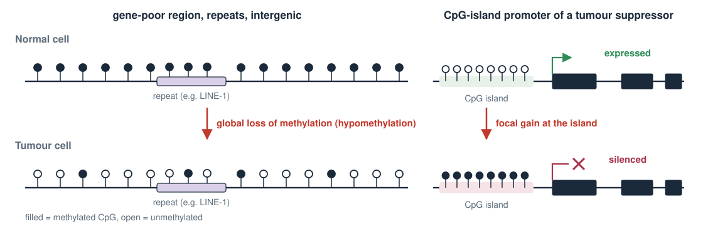
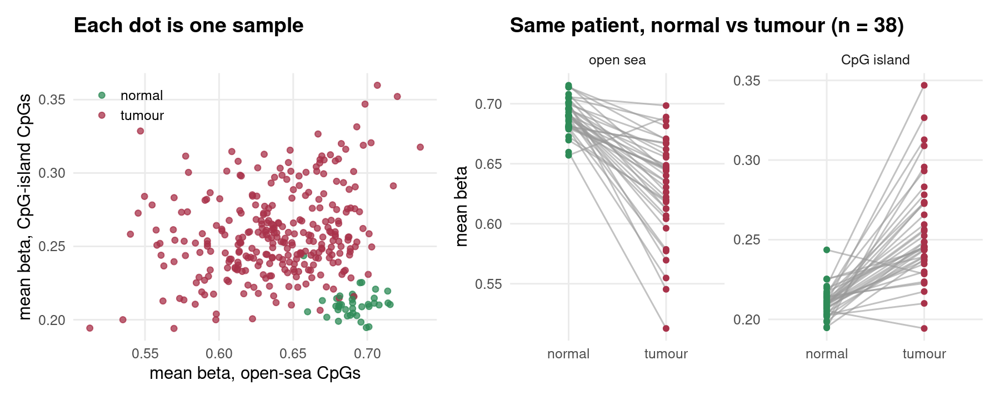
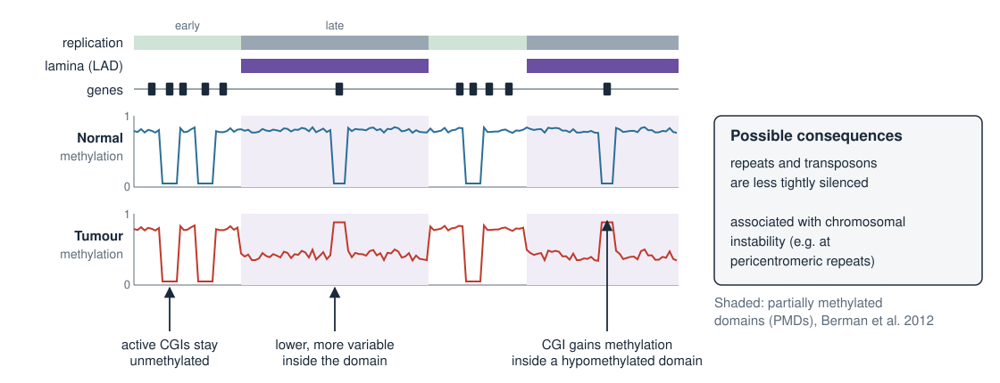
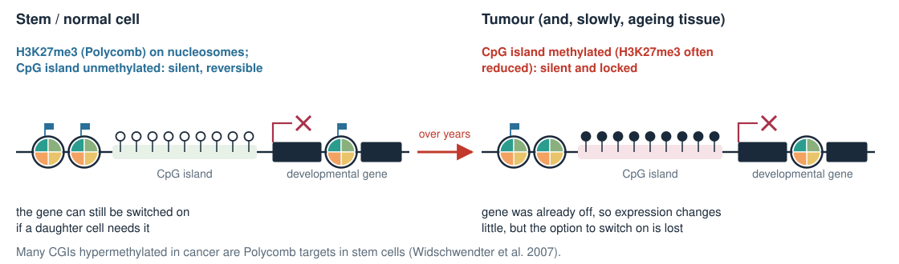
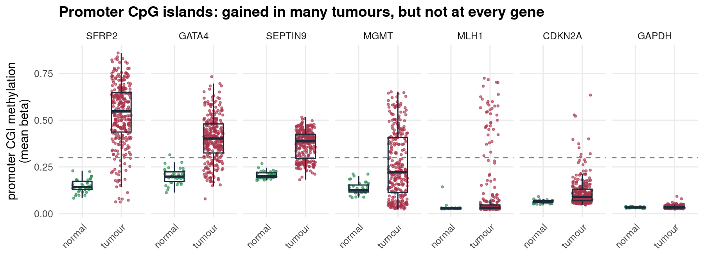
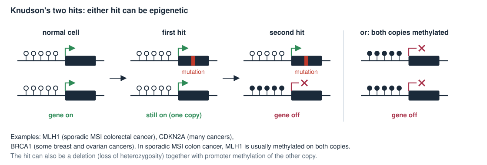
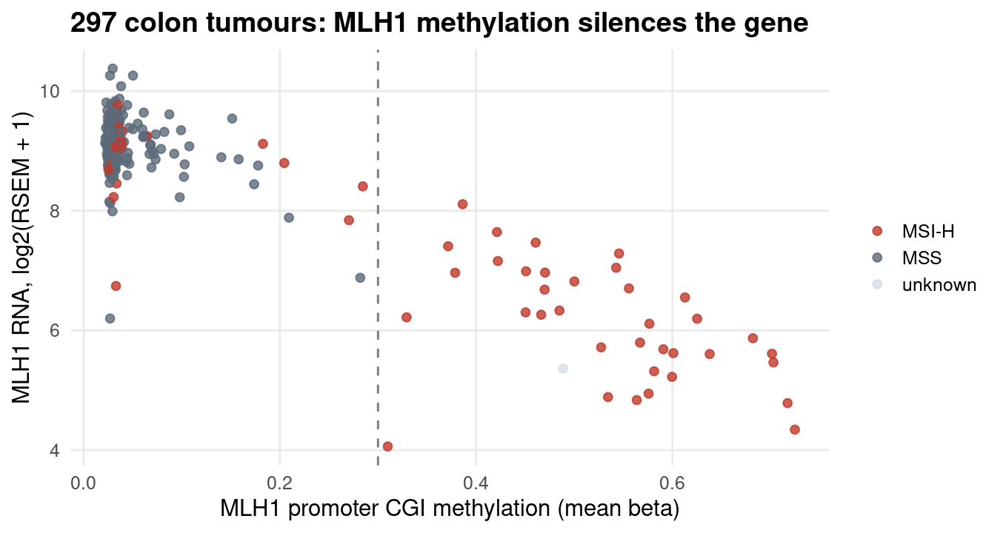
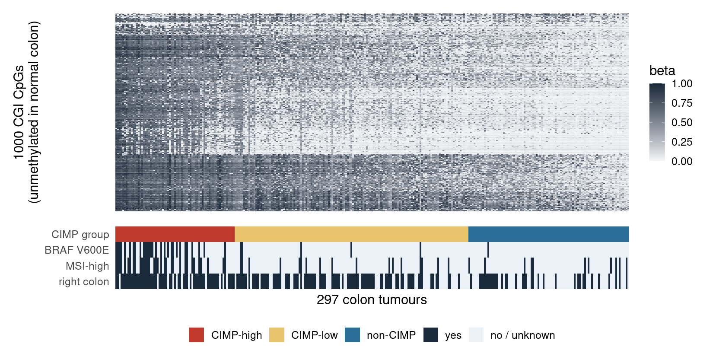
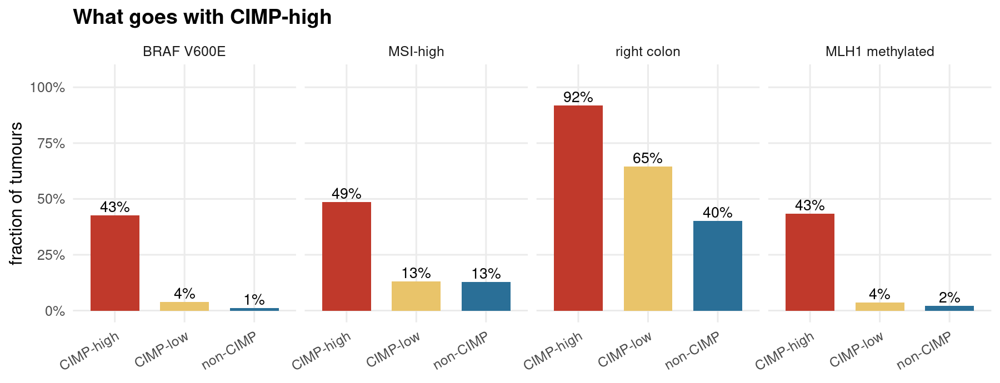
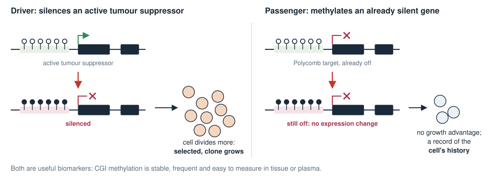
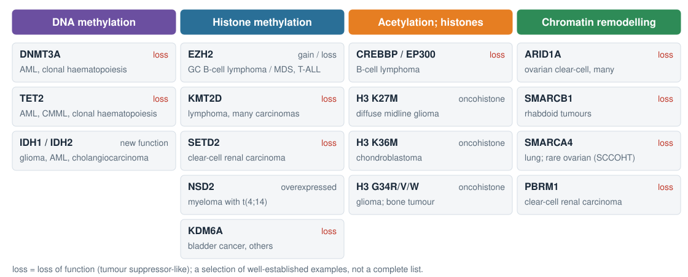
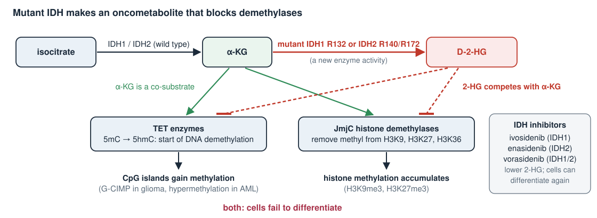
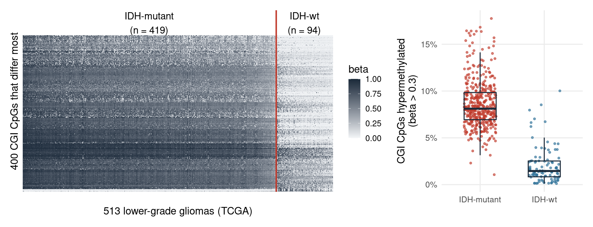
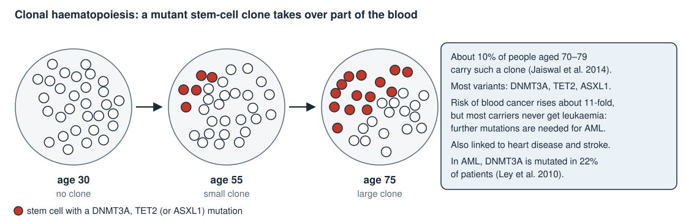
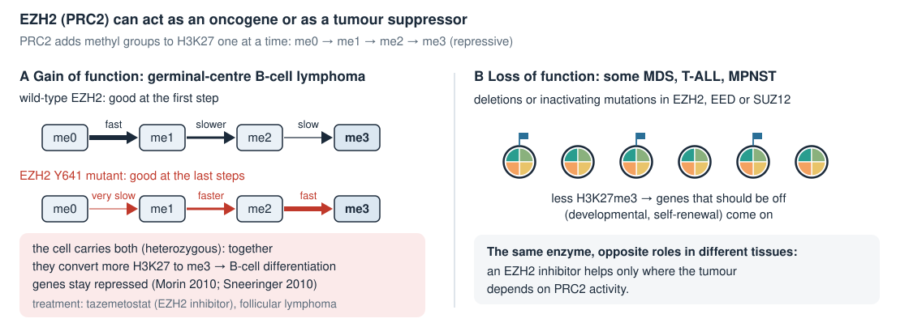
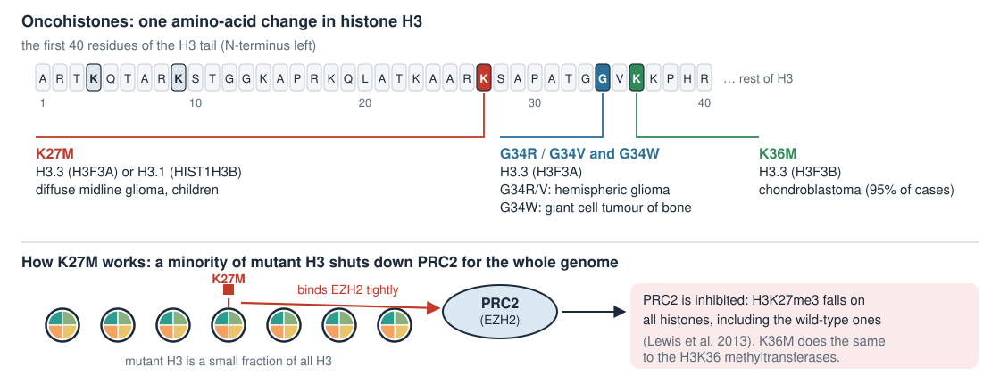
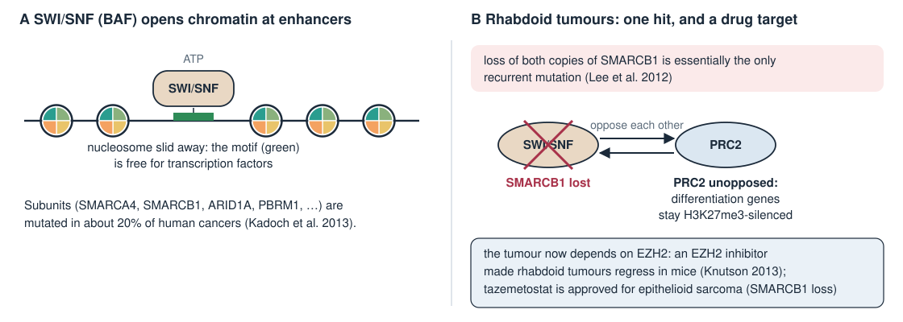
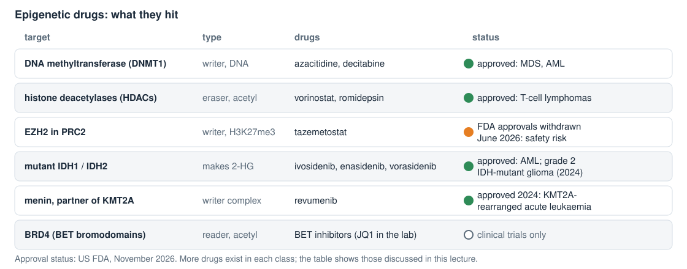
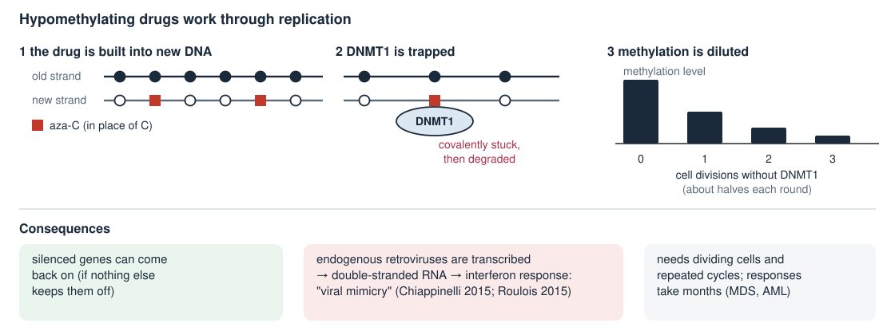
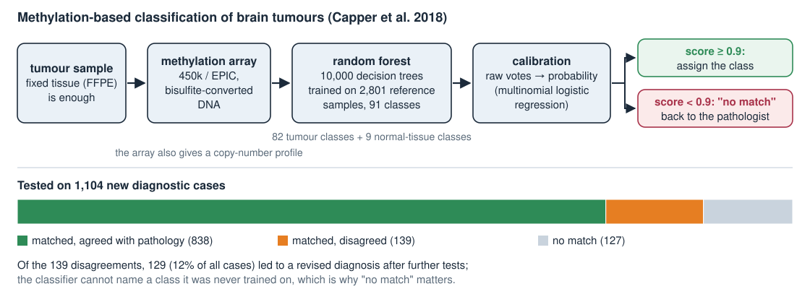
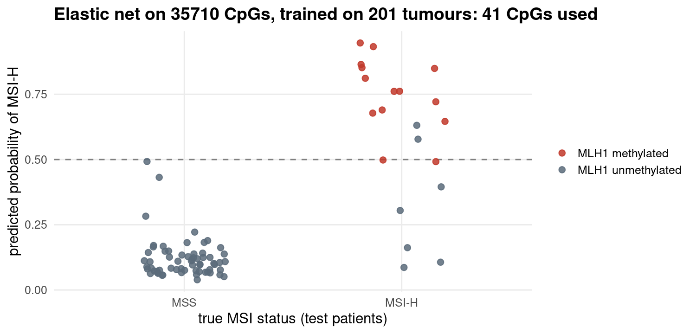
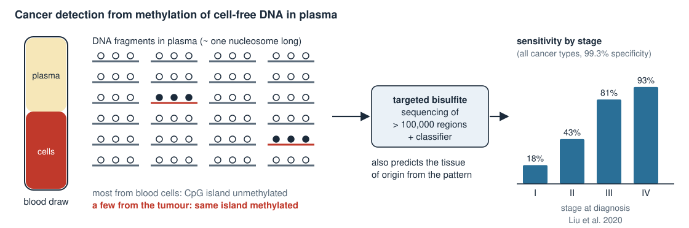
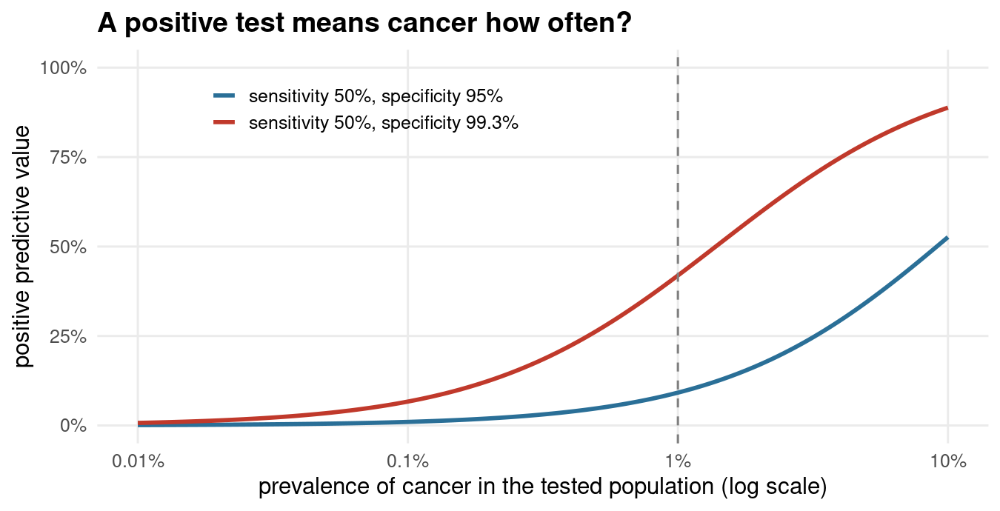
| idea | key fact |
|---|---|
| cancer methylome | global loss (PMDs, repeats), focal gain at CpG islands, often Polycomb targets |
| epigenetic hit | promoter methylation silences MLH1, CDKN2A, BRCA1; MGMT predicts temozolomide benefit |
| CIMP | many CGIs methylated together; BRAF V600E, MSI (via MLH1), right colon |
| driver vs passenger | most hypermethylated CGIs are passengers, but good markers |
| mutated regulators | IDH1/2 → 2-HG blocks TET/KDMs (G-CIMP); DNMT3A/TET2 in clonal haematopoiesis; EZH2 gain/loss; H3K27M inhibits PRC2; SWI/SNF loss |
| drugs | azacitidine/decitabine, HDACi, IDH and menin inhibitors; tazemetostat withdrawn (2026); BET inhibitors in trials |
| diagnostics | methylation classifiers (Capper 2018); cfDNA detection; PPV depends on prevalence |
Not required reading and not examined. For those who want the primary literature.